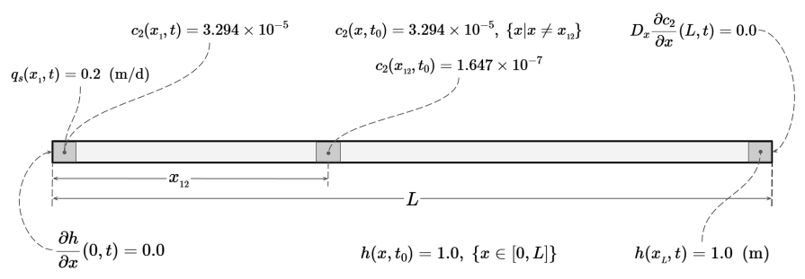
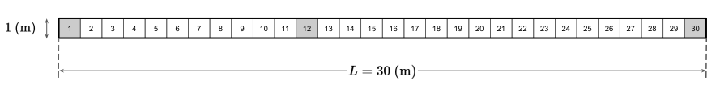

Código
import os
import json
import numpy as np
import matplotlib.pyplot as plt
import flopy
from src_gypsum import gwf, gwt
import xmf6Descripción.
En esta notebook se plantea el problema de flujo de agua subterránea y transporte conservativo de la especie química \(c_2 = Ca^{2+}\) y se resuelve usando MODFLOW 6 (GWF y GWT) en combinación de las herramientas de FloPy.
RTWMA © 2024-2026 by IGF-UNAM is licensed under CC BY-NC 4.0


El dominio es una columna 1D de longitud \(L = 30 \text{ (m)}\), en dirección \(x\), representando un acuífero de espesor y ancho unitarios, véase figura 1.

Sobre este dominio ocurren dos procesos acoplados:
El campo de flujo (carga \(h\) y velocidad \(v\)) controla el transporte, pero el soluto no modifica la densidad ni la viscosidad del agua.
El problema se va a resolver en un periodo de \(40\) días, con un paso de tiempo constante de \(1\) día (\(40\) pasos de tiempo).
Para un acuífero 1D, confinado, con conductividad hidráulica \(K_x\) y coeficiente de almacenamiento específico \(S_s\), la ecuación de flujo es:
\[ S_s \frac{\partial h}{\partial t} = \frac{\partial}{\partial x} \left( K_x \frac{\partial h}{\partial x} \right) + q_s(x,t) \]
donde \(q_s(x,t)\) representa fuentes o sumideros volumétricos de agua por unidad de volumen (p. ej. un pozo).
Condiciones de frontera:
\[ \left.\frac{\partial h}{\partial x}\right|_{(0,t)} = 0 \qquad\text{(frontera cerrada / flujo nulo en } x=0\text{)} \]
\[ h(x_{_{L}}, t) = 1.0 \qquad\text{(carga fija en el extremo } x=x_{_{L}}\text{)} \]
Condición inicial:
\[ h(x,t_0) = 1.0 \qquad\text{(m)} \]
Para la especie \(c_2\), con porosidad \(\theta\), coeficiente de dispersión hidrodinámica \(D_{xx}\) y descarga específica \(q_x\) la ecuación de transporte se escribe como:
\[ \begin{eqnarray*} - \frac{\partial (\theta c_2)}{\partial t} - \frac{\partial (q_x c_2)}{\partial x} + \frac{\partial}{\partial x}\left(\theta D_{xx} \frac{\partial c_2}{\partial x}\right) + q_s c_s & = & 0 \end{eqnarray*} \]
con \(D_{xx} = \alpha_L |v_x| + D^{*}\) (\(\alpha_L\): dispersividad longitudinal, \(D^{*}\): difusión molecular efectiva), $v_x = q_x / $ (\(v_x\): velocidad de poro de flujo de agua) y \(c_s\) es la concentración volumétrica de soluto en la fuente/sumidero.
Condiciones de frontera:
\[ c_2(x_{_{1}}, t) = 3.294\times 10^{-5} \qquad\text{(concentración fija en } x=x_{_{1}}) \]
\[ D_x \left.\frac{\partial c_1}{\partial x}\right|_{(L,t)} = 0 \qquad\text{(flujo dispersivo nulo en la salida } x=L ) \]
Condición inicial:
\[ c_2(x,t_0) = 3.294\times 10^{-5} \quad \forall\, x \neq x_{_{12}} \] \[ c_2(x_{_{12}}, t_0) = 1.647\times 10^{-7} \]
En el instante inicial la concentración es igual a un valor de \(3.294\times 10^{-5}\) en todo el dominio, excepto en el punto \(x_{_{12}}\), donde existe un valor en dicha celda igual a \(1.647\times 10^{-7}\) que representa una masa de soluto ya presente en el medio (p. ej. un derrame o inyección previa) que a partir de \(t_0\) comenzará a migrar y dispersarse bajo la acción del flujo.
La solución numérica se obtiene usando MODFLOW 6 y FloPy, de manera similar a como se hizo para \(c_1\) en la notebook 01_C1_flow_tran.ipynb. A continuación se describen los pasos más importantes de la implementación.
El primer paso es importar las bibliotecas necesarias para realizar la simulación:
import os
import json
import numpy as np
import matplotlib.pyplot as plt
import flopy
from src_gypsum import gwf, gwt
import xmf6Definimos un diccionario con información de la ruta al ejecutable de MODFLOW y con los nombres de los modelos de flujo y transporte así como los directorios del espacio de trabajo.
# Variables de entorno
with open('../env.json', 'r', encoding='utf-8') as file:
env = json.load(file)
env["ROOT_DIR"] = os.getcwd() # Agregamos el dir raíz
xmf6.nice_print("Environment variables", env)
paths = dict(
# Ejecutable de MODFLOW 6
mf6_exe = env["MF6EXE"],
#
# Nombre de los modelos y espacios de trabajo
flow_name = "flow",
flow_ws = "io_mf6/c2/gwf",
tran_name = "transport",
tran_ws = "io_mf6/c2/gwt"
)
xmf6.nice_print("Paths, files and more ...", paths)
| Parámetro | Valor | Unidades | Variable |
|---|---|---|---|
| Length of system (rows) | \(30.0\) | m | |
| Number of layers | \(1\) | dis["nlay"] |
|
| Number of rows | \(1\) | dis["nrow"] |
|
| Number of columns | \(30\) | dis["ncol"] |
|
| Column width | \(1.0\) | m | dis["delr"] |
| Row width | \(1.0\) | m | dis["delc"] |
| Top of the model | \(1.0\) | m | dis["top"] |
| Layer bottom elevation (cm) | \(0\) | m | dis["botm"] |
# Discretización espacial
nlay = 1
nrow = 1
ncol = 30
delr = 1.0
delc = 1.0
top = 1.0
botm = 0.0
dis = {
'units' : "meters",
'nlay': nlay,
'nrow': nrow,
'ncol': ncol,
'delr': delr,
'delc': delc,
'top' : top,
'botm': botm
}
xmf6.nice_print("Spatial discretization", dis)| Parámetro | Valor | Unidades | Variable |
|---|---|---|---|
| Number of stress periods (NPER) | \(1\) | tdis["nper"] |
|
| Total time | \(40\) | days | tdis["perioddata"][0][0] |
| Number of time steps (NSTP) | \(1\) | tdis["perioddata"][0][1] |
|
| Multiplier (TSMULT) | \(1\) | tdis["perioddata"][0][2] |
NOTA.
El valor del parámetro NSTP será cambiado a \(40\) cuando se resuelva el transporte.
# Discretización del tiempo para el flujo
tdis = {
'units': "days",
'nper' : 1,
'perioddata': [(40.0, 1, 1.0)] #PERLEN, NSTP, TSMULT
}
xmf6.nice_print("Time discretization (flow)", tdis)Los parámetros necesarios para esta simulación son similares a los del caso de la especie \(c_1\), solo cambian los valores de la concentración en los puntos clave, como se muestra en la siguiente tabla.
| Parámetro | Símbolo | Valor | Unidades | Variable |
|---|---|---|---|---|
| Initial head | \(h(x, t_0)\) | \(1.0\) | m | phys["initial_head"] |
| Head boundary condition (type I) | \(h({x_{_{L}}, t})\) | 1.0 | m | phys["bc_head_t1"] |
| Hydraulic conductivity | \(K_x\) | \(1.0\) | m d\(^{-1}\) | phys["hydraulic_conductivity"] |
| Specific discharge | \(q_s\) | \(0.2\) | m d\(^{-1}\) | phys["specific_discharge"] |
| Source concentration | \(c_s\) | \(3.294\times 10^{-5}\) | unitless | phys["source_concentration"][0] |
| Well inyection | \(q_s c_s\) | – | m d\(^{-1}\) | phys["well"] |
| Porosity | \(\theta\) | \(0.5\) | unitless | phys["porosity"] |
| Initial concentration | \(c_2(x, t_0)\) | \(3.294\times 10^{-5}\) | unitless | phys["initial_concentration"] |
| Initial concentration pulse | \(c_2(x_{_{12}}, t_0)\) | \(1.647\times 10^{-7}\) | unitless | phys["initial_concentration"][11] |
| Concentration boundary condition (type I) | \(c_2(x_{_{1}}, t)\) | \(3.294\times 10^{-5}\) | unitless | phys["bc_conc_t1"][0] |
| Longitudinal Dispersivity | \(\alpha_L\) | \(0.5\) | m | phys["longitudinal_dispersivity"] |
| Dispersion coefficient | \(D_{xx}\) | \(1.0\) | m\(^{2}\) d\(^{-1}\) | phys["dispersion_coefficient"] |
# Arreglo para la condición inicial
c2_ini = np.full((nlay,nrow,ncol), 3.294e-5) # En todo el dominio
c2_ini[0, 0, 11] = 1.647e-7 # Pulso en x_L
print("Array info: c2")
xmf6.info_array(c2_ini)
phys = dict(
initial_head = 1.0,
bc_head_t1 = [("CHD-1" , [(0, 0, dis['ncol'] - 1), 1.0])],
hydraulic_conductivity = 1.0,
specific_discharge = 0.2,
source_concentration = 3.294e-5,
porosity = 0.5,
initial_concentration = c2_ini,
bc_conc_t1 = [("CNC-1", [(0, 0, 0), 3.294e-5])],
longitudinal_dispersivity = 0.5, # 0.2 o 0.5?
dispersion_coefficient = 1.0
)
# Agregamos la información del pozo
q = phys["specific_discharge"] * dis['delc'] * dis['delr'] * dis['top']
phys["well"] = [("WEL-1", "AUX", "CONCENTRATION"), ((0, 0, 0), q, phys["source_concentration"])]
xmf6.nice_print("Physical parameters", phys)Para realizar una simulación de flujo con GWF de MODFLOW 6 se requiere construir una estructura de componentes y paquetes como se describe en la notebook 01_C1_flow_tran.ipynb.
Para resolver el problema de flujo requerimos de los siguientes paquetes:
DIS: Discretización espacial de tipo estructurada.NPF: Propiedades del flujo, particularmente la conductividad hidráulica \(K_x\).IC: Definición de las condiciones iniciales de la carga hidráulica.CHD: Condición de frontera de carga hidráulica fija \(h(x_{_{L}},t)=1.0\).WEL: Pozo de inyección de \(q_s c_s\) en \(x_{_{1}}\).OC : Definición de los archivos para almacenar los resultados de la simulación.STO debido a que el flujo se resuelve en régimen permanente.Toda esta construcción se encapsula en la función build() que se puede revisar en el archivo src_gypsum/gwf.py. Aquí solo ejecutamos dicha función pasándole los parámetros de las rutas, la discretización temporal, los parámetros físicos y la discretización espacial:
# Escritura de los archivos de entrada para la simulación de flujo.
o_sim, o_gwf = gwf.build(paths, tdis, phys, dis, silent = True)El objeto o_sim generado por la función build() es usado para ejecutar el modelo de flujo:
# Ejecución de la simulación de flujo.
o_sim.run_simulation(silent = True)A continuación extraemos la información de la carga hidráulica \(h\) y de la descarga específica \(q\).
# Objeto para acceder a los resultados de la carga hidráulica.
o_head = o_gwf.output.head()
# Tiempos calculados para el flujo.
times_h = np.array(o_head.get_times())
# Recuperamos la carga hidráulica del paso 40.
head = o_head.get_data(totim=40)[0, 0, :]
# Objeto para acceder a los resultados de la descarga específica.
budget = o_gwf.output.budget()
# Recuperamos la descarga específica del paso 40.
spdis = budget.get_data(totim=40, text="DATA-SPDIS")[0]
qx, qy, qz = flopy.utils.postprocessing.get_specific_discharge(spdis, o_gwf)
# Recuperamos las coordenadas de los centros de las celdas de la malla
x, y, z = o_gwf.modelgrid.xyzcellcenters
flow_dict = dict(
xcoord = x,
times_h = [times_h],
head = [head],
qx = qx[:,0],
)
xmf6.nice_print("Head", flow_dict)Para realizar la simulación del transporte conservativo se debe construir una estructura similar a la realizada para la solución del flujo. Recordemos que la discretización del tiempo debe cambiar para tomar en cuenta que en este caso se realizan \(40\) pasos de un día cada uno, entonces el diccionario tdis lo modificamos como sigue:
# Discretización del tiempo para el transporte
tdis = {
'units': "days",
'nper' : 1,
'perioddata': [(40.0, 40, 1.0)] #PERLEN, NSTP, TSMULT
}
xmf6.nice_print("Time discretization (transport)", tdis)Para resolver el problema de transporte se requiere agregar paquetes al modelo en este caso se necesita de lo siguiente:
DIS: Discretización espacial de tipo estructurada. Se usa la misma que se usó para el flujo.IC: Condición inicial \(c_1(x,t_0)\) que consiste en un valor constante en todo el dominio y el pulso puntual en \(x_{_{12}}\).ADV : Advección con el esquema TVD.DSP : Dispersión, se define el coeficiente \(\alpha_L\) (dispersión longitudinal) .MST: Se define la porosidad \(\theta\).CNC: Condición de frontera de concentración fija \(c_1(x_{_{1}},t)=1.000329\).CNC: MODFLOW 6 aplica de forma natural un gradiente dispersivo nulo en la celda de salida, es decir \(D_x\,\partial c_1/\partial x(L,t)=0\) se cumple automáticamente.FMI : Le indica a la simulación de dónde leer las cargas (GWFHEAD) y los caudales (GWFBUDGET) que ya fueron calculados por la simulación de flujo anterior.SSM: vincula la concentración auxiliar del pozo WEL-1 con el transporte (requerido por MODFLOW 6 cuando el modelo de flujo tiene paquetes de frontera).Toda esta construcción se encapsula en la función gwt.build() que se puede revisar en el archivo src_gypsum/gwt.py. Aquí solo ejecutamos dicha función pasándole los parámetros de las rutas, la discretización temporal, los parámetros físicos y la discretización espacial:
o_sim, o_gwt = gwt.build(paths, tdis, phys, dis, silent = True) # Ejecución de la simulación de transporte.
o_sim.run_simulation(silent = False)A continuación extraemos la información generada por la simulación de transporte.
# Objeto para recuperar los resultados del transporte
o_conc = o_gwt.output.concentration()
# Recuperamos los pasos de tiempo calculados
times_c = np.array(o_conc.get_times())
# Recuperamos la información del último paso de tiempo
c2_40 = o_conc.get_data(totim=times_c[-1]).flatten()
# Diccionario para imprimir la información en pantalla
tran_dict = dict(
xcoord = x,
times = [times_c],
conc = [c2_40]
)
xmf6.nice_print("c2 concentration", tran_dict)La visualización de los resutados de flujo y transporte los realizamos usando FloPy en combinación con matplotlib.
# Usamos LaTeX para los tectos de la figura.
plt.rcParams.update({
"text.usetex": True,
"font.family": "serif", # Uses standard Computer Modern font
"font.serif": ["Computer Modern Roman"],
})# --- Definición de la figura. Se definen tres gráficas
fig, (ax1, ax2, ax3) = plt.subplots(3,1, sharex = True, figsize =(6,5),
height_ratios=[0.1, 0.5, 0.5])
# --- Gráfica 1. Carga hidráulica y descarga específica sobre la malla
ax1.set_aspect('equal')
pmv = flopy.plot.PlotMapView(model = o_gwf, ax = ax1)
pmv.plot_grid(colors = 'k', lw = 0.5, ls="-")
pmv.plot_array(head, cmap = "viridis", alpha=0.5)
pmv.plot_vector(qx, qy, scale=40, pivot="mid", width=0.004, normalize=True, color="k")
# --- Gráfica 2. Carga hidráulica vs posición
ax2.plot(x[0], head, marker="o", lw =1.0, c = "dimgray", label = 'Head',
mec="black", mfc="black", markersize="5", alpha = 0.75, )
ax2.set_xlim(0, 30)
ax2.set_ylabel("$h$ (m)")
ax2.grid()
max_y = 0
# --- Gráfica 3. Concentración para diferentes pasos de tiempo
marker = ["o", "s", "v", "^"]
for i, t in enumerate(times_c[9::10]):
c2 = o_conc.get_data(totim=t).flatten()
ax3.plot(x[0], c2, ls ="-", lw = 1.0, label=f"t = {t} days", zorder=2,
marker = marker[i], markersize="4", alpha = 0.75)
max_y = max(max_y, c2.max())
ax3.set_ylim(0, max_y * 1.1)
ax3.set_xlabel("$x$ (m)")
ax3.set_ylabel("$c_1$")
ax3.legend(fontsize=7)
ax3.grid()
plt.tight_layout()
plt.show()c_5 = np.array([o_conc.get_data(totim=t)[0, 0, 4] for t in times_c])
c_11 = np.array([o_conc.get_data(totim=t)[0, 0, 10] for t in times_c])
c_12 = np.array([o_conc.get_data(totim=t)[0, 0, 11] for t in times_c])
c_30 = np.array([o_conc.get_data(totim=t)[0, 0, 29] for t in times_c])
fig, ax = plt.subplots(3,1, sharex = True, figsize=(7, 4.5))
fig.suptitle("$c_2$ at observation points (as time function)")
ax[0].plot(times_c, c_5, lw=2,marker="o",markersize="2",c="C0",label="$x_5$")
ax[0].grid()
ax[0].legend()
ax[1].plot(times_c, c_11, lw=2,marker="o",markersize="2",c="C1",label="$x_{11}$")
ax[1].plot(times_c, c_12, lw=2,marker="o",markersize="2",c="C2",label="$x_{12}$")
ax[1].grid()
ax[1].legend()
ax[2].plot(times_c, c_30, lw=2,marker="o",markersize="2",c="C3",label="$x_{30}$")
ax[2].grid()
ax[2].legend()
ax[2].set_xlabel("time (days)")
plt.tight_layout()
plt.show()